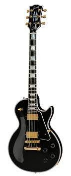
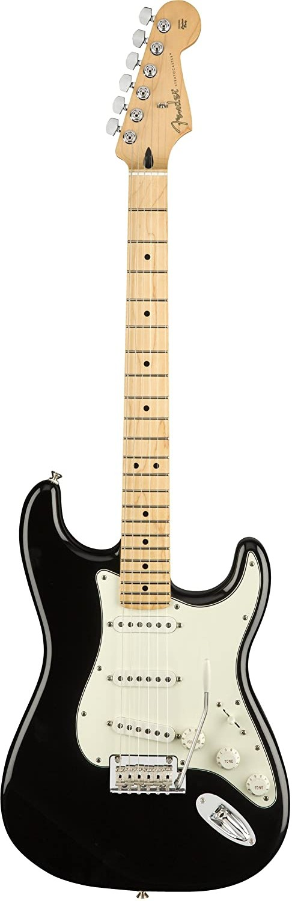

Electric Guitars Section
Electric Guitars Section
|Home|
|Acoustic Guitars|
|Electric Guitars|
|Bass Guitars|
|Drums|
|Amplifiers|
| Les Paul Custom w/ Ebony Fingerboard Gloss - Ebony | |||
|---|---|---|---|
|  | Design/Architecture Detail | Description | |
|
The Les Paul Custom lives up to the high standards set by its 1950s archetype while evolving to a level of tone and performance more suited to today's musical demands. Beneath the layers of its "tuxedo" appointments lies the crisp, edgy voice of a matched 490/498 humbucker set, a solid Ebony fingerboard, a long neck tenon for maximum sustain and a two-piece maple top over a solid mahogany body which adds the perfect amount of sonic bite to everything from jazz to hard rock. It sounds as good as it looks, and it looks as good as it sounds! |
||
| Price: ₱254,494.09 | |||
| Fender Player Stratocaster Electric Guitar | |||
|  | Design/Architecture Detail | Description | |
|
The Fender Player Stratocaster features an alder body with a gloss finish, three Player Series single-coil Stratocaster pickups and a “Modern C”-shaped neck profile. The guitar also features a 9.5”-radius fingerboard with 22 medium-jumbo frets and a 2-point tremolo bridge with bent-steel saddles. |
||
| Price: ₱40,705.09 | |||
|Go Back From the Top|